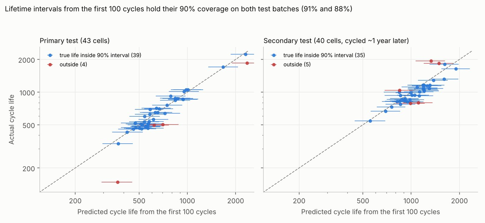
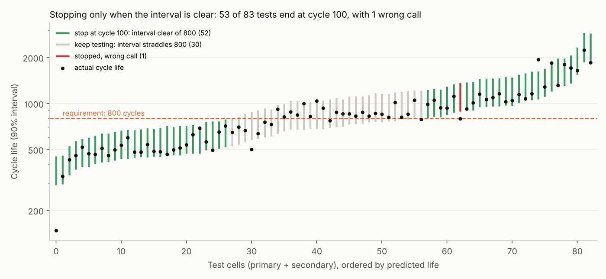
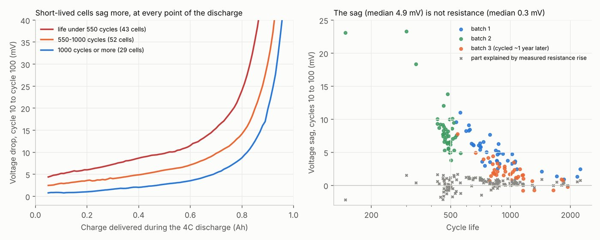

Battery lifetime from the first 100 cycles, with intervals you can act on
Testing a battery to the end of its life takes months. A model that sees only the first 100 cycles can predict lifetime, but to stop a test early an engineer needs to know how far to trust each prediction, including on cells made a year later.
The problem
124 commercial lithium-ion cells (LFP/graphite) were fast-charged under 72 different protocols and cycled until they lost 20% of their capacity, which took between 148 and 2,237 cycles. Severson et al. (Nature Energy, 2019) showed the first 100 cycles already carry most of the information about lifetime.
A single predicted number is not enough to act on. I asked whether the published results reproduce from raw data, whether prediction intervals hold their stated coverage on new cells, and whether those intervals can decide when a lifetime test can safely stop.
What I did
- Rebuilt the published early-life features from the raw data, chiefly the change in the discharge curve between cycles 10 and 100, and reproduced the paper's three models. The one-feature model matches the paper exactly; the others land within a few points.
- Built three kinds of 90% interval on 41 training cells: a naive error band, a Bayesian ridge interval, and a distribution-free jackknife+ interval from 41 leave-one-out refits. Checked coverage on 43 held-out cells and on a 40-cell batch cycled about a year later.
- Turned the intervals into a screening rule: stop a test at cycle 100 only if the whole interval is clearly above or below the required lifetime; otherwise keep testing. Compared it with trusting the point prediction alone.
- Tested what the early signal is physically: compared discharge curves at equal charge, checked against independently measured resistance and temperature, and fitted a Butler–Volmer kinetic model. Added a diffusion-induced stress model of graphite particles for each charging protocol.
Results



| Requirement | Tests stopped at cycle 100 | Wrong calls | Test cycles saved | Point rule: wrong calls |
|---|---|---|---|---|
| 600 cycles | 57 (69%) | 0 | 72% | 5 of 83 |
| 800 cycles | 53 (64%) | 1 | 58% | 4 of 83 |
| 1,000 cycles | 48 (58%) | 0 | 48% | 8 of 83 |
Interval rule vs point rule on all 83 test cells. The point rule stops every test but gets 5 to 10% of cells wrong.
Limitations
- One chemistry and one lab: all cells are the same LFP/graphite type cycled at 30 °C. Nothing shows the intervals transfer to other chemistries or usage.
- Small test sets: with 40 to 43 cells, coverage is uncertain by about ±5 percentage points, and the batch-shift effect is suggestive rather than proven.
- Jackknife+ guarantees assume new cells resemble the training cells. The later batch breaks that, which is why it is tested separately, and there is no guarantee for future batches.
- The physical models are deliberately simple and cannot tell apart two explanations for the sag; low-rate diagnostic cycles would be needed. This is a reproduction and extension of Severson et al.'s data and features, not a new dataset.